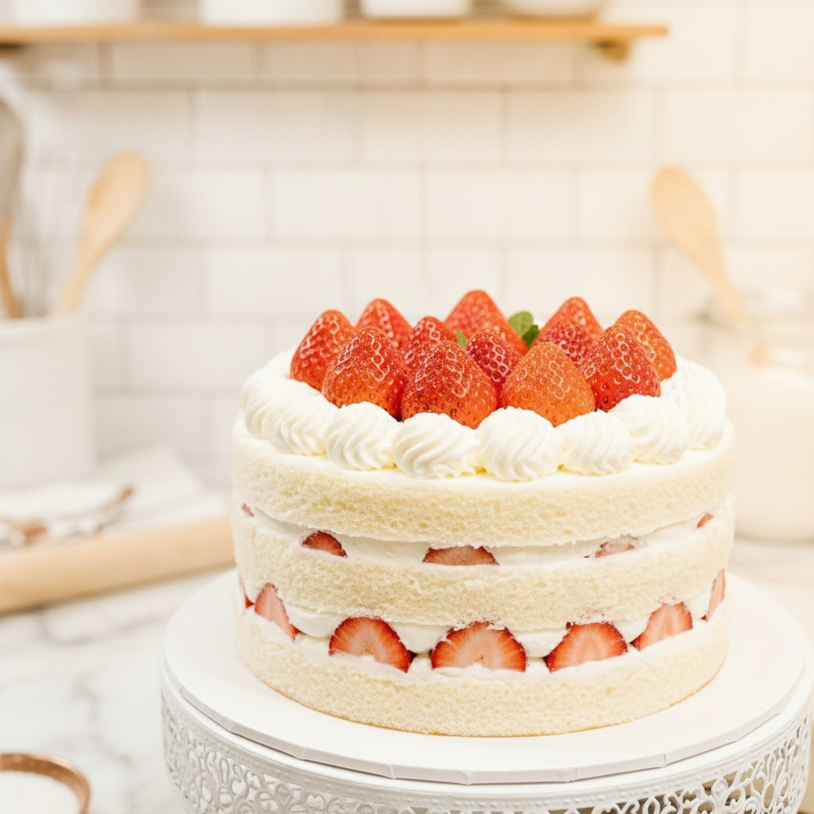

ケーキ屋LP
季節のケーキや店舗の温かい雰囲気を伝え、来店予約につなげるランディングページです。
制作ポイント
写真を大きく見せ、商品カテゴリ・おすすめ商品・予約導線をスマートフォンでも見やすく整理しました。
About
愛媛県在住。電気設計職として働きながらWeb制作を学習しています。 設計業務で培った論理的な考え方を活かし、お客様の想いや課題を整理しながら、 分かりやすく成果につながるWebサイト制作を心掛けています。 丁寧なコミュニケーションと迅速な対応を大切にし、一つひとつのご依頼に誠実に取り組みます。
強み
電気設計の経験を活かし、情報整理や課題解決を意識したサイト制作を行います。
姿勢
ヒアリングを大切にし、お客様が相談しやすいパートナーを目指しています。
Skills
HTML
情報構造を意識したマークアップ
CSS
読みやすく整ったスタイリング
Tailwind CSS
効率的なレスポンシブ実装
VS Code
制作環境として使用
Contact
LP制作やWebサイト制作のご相談をお待ちしています。目的や掲載内容が固まっていない段階でも、お気軽にご相談ください。